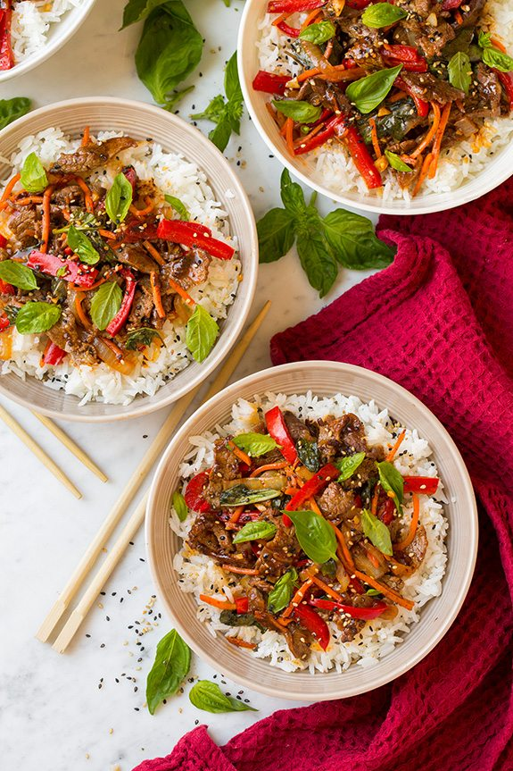

Hot Basil Beef Recipe
Description:
Thai Basil Beef, or Pad Gra Prow, is an easy, delicious dish of stir-fried beef and thai basil. Thai Basil Beef over white rice is a perfect 15-minute meal.
Ingredients: serves four
- 1 pound: flank steak or sirloin steak
- 2 tablespoons: olive oil
- 2 teaspoons: cornstarch or tapioca flour
- 5 cloves: garlic
- 1: red bell pepper
- 1: medium onion
- 2 tablespoons: soy sauce
- 2 tablespoons: fish sauce
- 2 teaspoons: sugar
- 1 cup: fresh basil (thai preferred)
- Serve with rice
Steps:
- Toss the sliced beef with 2 teaspoons oil and 2 teaspoons cornstarch. Heat your wok over high heat, and add 2 tablespoons of oil. Sear the beef until just browned (but still a little rare), remove from the wok, and set aside.
- Add the garlic, red bell pepper, and onions to the wok and stir-fry until tender. Toss the beef back in, along with the soy sauce, fish sauce (if using), and sugar. Stir-fry for another few seconds, and then fold in the basil until it’s just wilted. Serve with steamed rice.